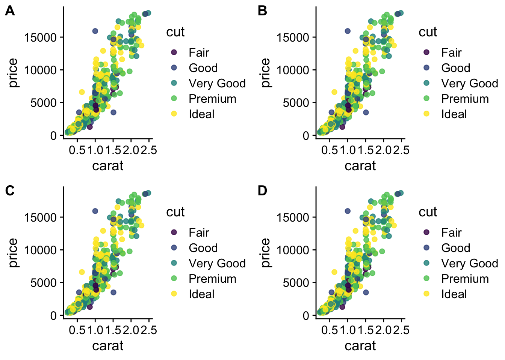
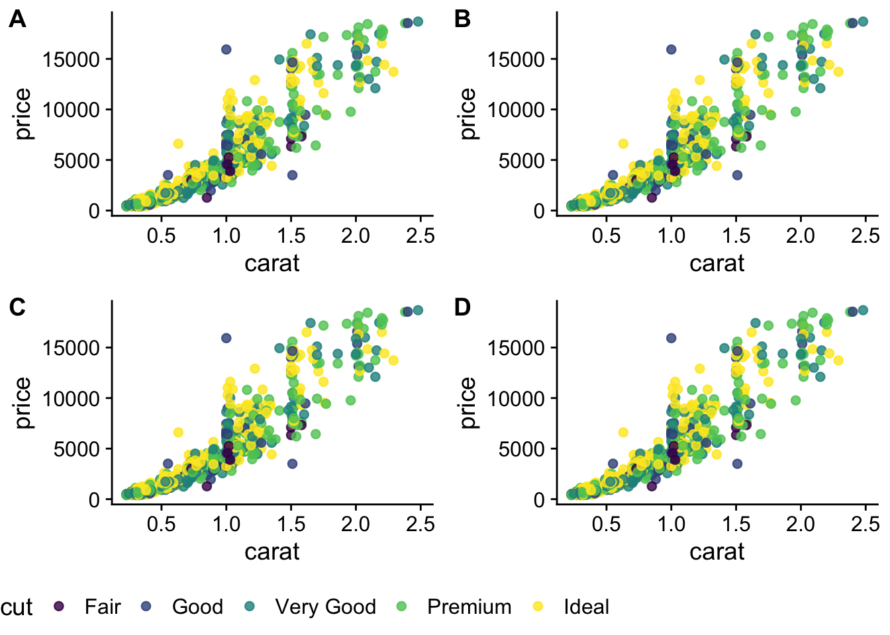

tidyverse odds & ends
RNA Bioscience Initiative | CU Anschutz
2026-03-27
[, [[, and $ [1] 110 110 93 110 175 105 245 62 95 123 123 180 180 180
[15] 205 215 230 66 52 65 97 150 150 245 175 66 91 113
[29] 264 175 335 109 hp mpg
Mazda RX4 110 21.0
Mazda RX4 Wag 110 21.0
Datsun 710 93 22.8
Hornet 4 Drive 110 21.4
Hornet Sportabout 175 18.7
Valiant 105 18.1
Duster 360 245 14.3
Merc 240D 62 24.4
Merc 230 95 22.8
Merc 280 123 19.2
Merc 280C 123 17.8
Merc 450SE 180 16.4
Merc 450SL 180 17.3
Merc 450SLC 180 15.2
Cadillac Fleetwood 205 10.4
Lincoln Continental 215 10.4
Chrysler Imperial 230 14.7
Fiat 128 66 32.4
Honda Civic 52 30.4
Toyota Corolla 65 33.9
Toyota Corona 97 21.5
Dodge Challenger 150 15.5
AMC Javelin 150 15.2
Camaro Z28 245 13.3
Pontiac Firebird 175 19.2
Fiat X1-9 66 27.3
Porsche 914-2 91 26.0
Lotus Europa 113 30.4
Ford Pantera L 264 15.8
Ferrari Dino 175 19.7
Maserati Bora 335 15.0
Volvo 142E 109 21.4[ can return a range, [[ returns a single value.
one-step filtering.
[1] 110 110 110 175 105 245 123 123 180 180 180 205 215 230
[15] 150 150 245 175 113 264 175 335 109two-step filtering. same result.
[1] TRUE TRUE FALSE TRUE TRUE TRUE TRUE FALSE FALSE
[10] TRUE TRUE TRUE TRUE TRUE TRUE TRUE TRUE FALSE
[19] FALSE FALSE FALSE TRUE TRUE TRUE TRUE FALSE FALSE
[28] TRUE TRUE TRUE TRUE TRUEalso can use with is.na() to identify / exclude NA values in a vector.
Use sum() to figure out how many are TRUE.
stringr provides several useful functions for operating on strings.
See the stringr cheatsheet
forcats provides several utilities for working with factors.
See the forcats cheatsheet
Attaching package: 'palmerpenguins'The following objects are masked from 'package:datasets':
penguins, penguins_raw# A tibble: 344 × 3
species island bill_length_mm
<fct> <fct> <dbl>
1 Adelie Torgersen 39.1
2 Adelie Torgersen 39.5
3 Adelie Torgersen 40.3
4 Adelie Torgersen NA
5 Adelie Torgersen 36.7
6 Adelie Torgersen 39.3
7 Adelie Torgersen 38.9
8 Adelie Torgersen 39.2
9 Adelie Torgersen 34.1
10 Adelie Torgersen 42
# ℹ 334 more rows# A tibble: 3 × 2
f n
<fct> <int>
1 Adelie 152
2 Chinstrap 68
3 Gentoo 124across()Apply functions to multiple columns at once.
# A tibble: 3 × 7
species bill_length_mm_mean bill_length_mm_sd
<fct> <dbl> <dbl>
1 Adelie 38.8 2.66
2 Chinstrap 48.8 3.34
3 Gentoo 47.5 3.08
# ℹ 4 more variables: bill_depth_mm_mean <dbl>,
# bill_depth_mm_sd <dbl>, flipper_length_mm_mean <dbl>,
# flipper_length_mm_sd <dbl>Complex grouping for detailed analysis.
# A tibble: 15 × 6
species island year n_penguins avg_mass mass_range
<fct> <fct> <int> <int> <dbl> <int>
1 Gentoo Biscoe 2009 44 5141. 1625
2 Gentoo Biscoe 2007 34 5071. 2200
3 Gentoo Biscoe 2008 46 5020. 2050
4 Adelie Biscoe 2009 16 3858. 1850
5 Adelie Torgersen 2008 16 3856. 1650
6 Chinstrap Dream 2008 18 3800 2100
7 Adelie Torgersen 2007 20 3763. 1475
8 Adelie Dream 2008 16 3756. 1550
9 Chinstrap Dream 2009 24 3725 1200
10 Chinstrap Dream 2007 26 3694. 1500
11 Adelie Dream 2007 20 3671. 1675
12 Adelie Dream 2009 20 3651. 1475
13 Adelie Biscoe 2008 18 3628. 1550
14 Adelie Biscoe 2007 10 3620 800
15 Adelie Torgersen 2009 16 3489. 1400scale_color_brewer() and scale_fill_brewer() control color and fill aesthetics.
Yes, but it is not exactly straightforward.
# fetch the legend for `p1`
legend <- get_legend(
p + theme(legend.position = "bottom")
)
p <- p + theme(legend.position = "none")
# first `plot_grid` builds the panels
panels <- plot_grid(
p,
p,
p,
p,
labels = c(
"A",
"B",
"C",
"D"
),
nrow = 2
)
# second `plot_grid` adds the legend to the panels
plot_grid(
panels,
legend,
ncol = 1,
rel_heights = c(1, .1)
)
Saves last plot as 5’ x 5’ file named plot_final.png in working directory.
Matches file type to file extension.